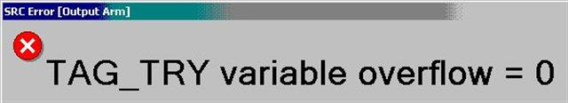

Service History
Subject: MMI 2.0L SRC error Output Arm TAG _TRY variable overflow=0
Handler Model: NS-7000
Controller: RC520 (MMI 2.0L)
Date: 16 Jun 2008
Symptom
During buyoff at UTL, encountered this "SRC error Output Arm TAG _TRY variable overflow=0".
The above error cannot be recovered after "Pause + Reset + Home" or even "Power Off and On + Home".
The thing i found very usual, the mentioned error can only be recovered after i remove units from Output Arm and Output Shuttle.

Action
Cause
Remarks
EPSON Aki-san replied that it is not a software bug.
>Reason of encounters
The controller was not able to understand, which output-tray binning should be select by the continuous start.
Therefore, it encountered the error.
This function is for the protection for miss-sorting.
Please try the following method:
1) To sequential mode for the output tray.
2) After that, please do "initial start"